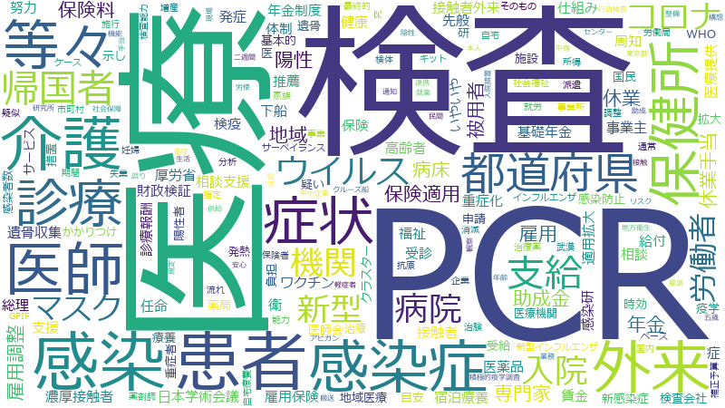

加藤勝信

検査 、地域 、PCR 、感染症 、支援 、感染 、医療機関 、体制 、都道府県 、努力 、措置 、専門家 、国民 、患者 、介護 、基本的 、政府 、新型コロナウイルス 、雇用 、医療 、支給 、拡大 、相談 、仕組み 、連携 、医師 、総理大臣 、課題 、事業 、企業 、病院 、整備 、ウィルス 、施設 、情報 、労働者 、厚生労働省 、マスク 、新型コロナ 、保健所 、期間 、助成金 、症状 、負担 、申請 、外来 、観点 、診療 、周知 、高齢者 、規定 、休業 、入院 、環境 、国内 、サービス 、能力 、調整 、調査 、民間 、雇用調整 、推進 、予算 、機能 、現場 、賃金 、令和 、要請 、陽性 、公表 、協力 、団体 、病床 、福祉 、ワクチン 、任命 、リスク 、積極的 、給付 、運用 、経済 、強化 、事業主 、分析 、業務 、帰国者 、安心 、生活 、社会 、示し 、先般 、最終的 、ケース 、保険 、通常 、機関 、設置 、派遣 、保険適用 、年金
検査 、PCR 、医療機関 、感染 、感染症 、地域 、都道府県 、支援 、介護 、患者 、体制 、医師 、専門家 、外来 、支給 、努力 、雇用 、医療 、保健所 、病院 、労働者 、症状 、診療 、措置 、マスク 、総理大臣 、帰国者 、相談 、助成金 、新型コロナウイルス 、基本的 、入院 、仕組み 、国民 、保険適用 、休業 、陽性 、休業手当 、拡大 、任命 、雇用調整 、病床 、日本学術会議 、政府 、ウィルス 、賃金 、事業主 、施設 、厚生労働省 、連携 、企業 、年金 、高齢者 、被用者 、新型コロナ 、事業 、保険料 、課題 、申請 、医療提供 、拉致問題 、整備 、雇用保険 、福祉 、周知 、期間 、保険 、給付 、濃厚接触者 、能力 、情報 、ワクチン 、負担 、接触者外来 、サービス 、受診 、先般 、推薦 、拉致被害者 、症 、接触者 、調整 、民間 、示し 、国内 、相談支援 、規定 、感染防止 、リスク 、分析 、基礎年金 、要請 、最終的 、派遣 、衛 、機能 、現場 、予算 、公表 、医師会
検査
| 言及回数 | 958回 |
| 言及発言者数（参考人を含む） | 722人 |
PCR
| 言及回数 | 638回 |
| 言及発言者数（参考人を含む） | 405人 |
医療機関
| 言及回数 | 521回 |
| 言及発言者数（参考人を含む） | 485人 |
感染
| 言及回数 | 534回 |
| 言及発言者数（参考人を含む） | 762人 |
感染症
| 言及回数 | 627回 |
| 言及発言者数（参考人を含む） | 1067人 |
地域
| 言及回数 | 713回 |
| 言及発言者数（参考人を含む） | 1313人 |
都道府県
| 言及回数 | 444回 |
| 言及発言者数（参考人を含む） | 790人 |
支援
| 言及回数 | 620回 |
| 言及発言者数（参考人を含む） | 1362人 |
介護
| 言及回数 | 324回 |
| 言及発言者数（参考人を含む） | 460人 |
患者
| 言及回数 | 327回 |
| 言及発言者数（参考人を含む） | 483人 |
体制
| 言及回数 | 484回 |
| 言及発言者数（参考人を含む） | 1152人 |
医師
| 言及回数 | 276回 |
| 言及発言者数（参考人を含む） | 421人 |
専門家
| 言及回数 | 361回 |
| 言及発言者数（参考人を含む） | 777人 |
外来
| 言及回数 | 197回 |
| 言及発言者数（参考人を含む） | 169人 |
支給
| 言及回数 | 300回 |
| 言及発言者数（参考人を含む） | 558人 |
努力
| 言及回数 | 366回 |
| 言及発言者数（参考人を含む） | 926人 |
雇用
| 言及回数 | 315回 |
| 言及発言者数（参考人を含む） | 732人 |
医療
| 言及回数 | 313回 |
| 言及発言者数（参考人を含む） | 758人 |
保健所
| 言及回数 | 222回 |
| 言及発言者数（参考人を含む） | 346人 |
病院
| 言及回数 | 254回 |
| 言及発言者数（参考人を含む） | 535人 |
労働者
| 言及回数 | 232回 |
| 言及発言者数（参考人を含む） | 443人 |
症状
| 言及回数 | 205回 |
| 言及発言者数（参考人を含む） | 355人 |
診療
| 言及回数 | 193回 |
| 言及発言者数（参考人を含む） | 314人 |
措置
| 言及回数 | 366回 |
| 言及発言者数（参考人を含む） | 1206人 |
マスク
| 言及回数 | 228回 |
| 言及発言者数（参考人を含む） | 519人 |
総理大臣
| 言及回数 | 273回 |
| 言及発言者数（参考人を含む） | 763人 |
帰国者
| 言及回数 | 142回 |
| 言及発言者数（参考人を含む） | 130人 |
相談
| 言及回数 | 294回 |
| 言及発言者数（参考人を含む） | 885人 |
助成金
| 言及回数 | 210回 |
| 言及発言者数（参考人を含む） | 450人 |
新型コロナウイルス
| 言及回数 | 316回 |
| 言及発言者数（参考人を含む） | 1037人 |
基本的
| 言及回数 | 317回 |
| 言及発言者数（参考人を含む） | 1076人 |
入院
| 言及回数 | 182回 |
| 言及発言者数（参考人を含む） | 340人 |
仕組み
| 言及回数 | 293回 |
| 言及発言者数（参考人を含む） | 961人 |
国民
| 言及回数 | 333回 |
| 言及発言者数（参考人を含む） | 1234人 |
保険適用
| 言及回数 | 131回 |
| 言及発言者数（参考人を含む） | 135人 |
休業
| 言及回数 | 183回 |
| 言及発言者数（参考人を含む） | 398人 |
陽性
| 言及回数 | 158回 |
| 言及発言者数（参考人を含む） | 269人 |
休業手当
| 言及回数 | 125回 |
| 言及発言者数（参考人を含む） | 134人 |
拡大
| 言及回数 | 299回 |
| 言及発言者数（参考人を含む） | 1141人 |
任命
| 言及回数 | 153回 |
| 言及発言者数（参考人を含む） | 272人 |
雇用調整
| 言及回数 | 171回 |
| 言及発言者数（参考人を含む） | 372人 |
病床
| 言及回数 | 155回 |
| 言及発言者数（参考人を含む） | 304人 |
日本学術会議
| 言及回数 | 109回 |
| 言及発言者数（参考人を含む） | 97人 |
政府
| 言及回数 | 316回 |
| 言及発言者数（参考人を含む） | 1333人 |
ウィルス
| 言及回数 | 243回 |
| 言及発言者数（参考人を含む） | 892人 |
賃金
| 言及回数 | 162回 |
| 言及発言者数（参考人を含む） | 376人 |
事業主
| 言及回数 | 146回 |
| 言及発言者数（参考人を含む） | 285人 |
施設
| 言及回数 | 243回 |
| 言及発言者数（参考人を含む） | 943人 |
厚生労働省
| 言及回数 | 229回 |
| 言及発言者数（参考人を含む） | 850人 |
連携
| 言及回数 | 288回 |
| 言及発言者数（参考人を含む） | 1262人 |
企業
| 言及回数 | 260回 |
| 言及発言者数（参考人を含む） | 1113人 |
年金
| 言及回数 | 131回 |
| 言及発言者数（参考人を含む） | 256人 |
高齢者
| 言及回数 | 189回 |
| 言及発言者数（参考人を含む） | 657人 |
被用者
| 言及回数 | 91回 |
| 言及発言者数（参考人を含む） | 72人 |
新型コロナ
| 言及回数 | 226回 |
| 言及発言者数（参考人を含む） | 937人 |
事業
| 言及回数 | 268回 |
| 言及発言者数（参考人を含む） | 1247人 |
保険料
| 言及回数 | 125回 |
| 言及発言者数（参考人を含む） | 247人 |
課題
| 言及回数 | 271回 |
| 言及発言者数（参考人を含む） | 1308人 |
申請
| 言及回数 | 200回 |
| 言及発言者数（参考人を含む） | 809人 |
医療提供
| 言及回数 | 121回 |
| 言及発言者数（参考人を含む） | 252人 |
拉致問題
| 言及回数 | 95回 |
| 言及発言者数（参考人を含む） | 110人 |
整備
| 言及回数 | 251回 |
| 言及発言者数（参考人を含む） | 1215人 |
雇用保険
| 言及回数 | 104回 |
| 言及発言者数（参考人を含む） | 161人 |
福祉
| 言及回数 | 155回 |
| 言及発言者数（参考人を含む） | 512人 |
周知
| 言及回数 | 189回 |
| 言及発言者数（参考人を含む） | 828人 |
期間
| 言及回数 | 211回 |
| 言及発言者数（参考人を含む） | 1010人 |
保険
| 言及回数 | 135回 |
| 言及発言者数（参考人を含む） | 404人 |
給付
| 言及回数 | 151回 |
| 言及発言者数（参考人を含む） | 532人 |
濃厚接触者
| 言及回数 | 107回 |
| 言及発言者数（参考人を含む） | 212人 |
能力
| 言及回数 | 178回 |
| 言及発言者数（参考人を含む） | 765人 |
情報
| 言及回数 | 239回 |
| 言及発言者数（参考人を含む） | 1255人 |
ワクチン
| 言及回数 | 153回 |
| 言及発言者数（参考人を含む） | 572人 |
負担
| 言及回数 | 203回 |
| 言及発言者数（参考人を含む） | 1000人 |
接触者外来
| 言及回数 | 72回 |
| 言及発言者数（参考人を含む） | 50人 |
サービス
| 言及回数 | 178回 |
| 言及発言者数（参考人を含む） | 800人 |
受診
| 言及回数 | 104回 |
| 言及発言者数（参考人を含む） | 218人 |
先般
| 言及回数 | 137回 |
| 言及発言者数（参考人を含む） | 477人 |
推薦
| 言及回数 | 97回 |
| 言及発言者数（参考人を含む） | 178人 |
拉致被害者
| 言及回数 | 75回 |
| 言及発言者数（参考人を含む） | 71人 |
症
| 言及回数 | 93回 |
| 言及発言者数（参考人を含む） | 169人 |
接触者
| 言及回数 | 77回 |
| 言及発言者数（参考人を含む） | 85人 |
調整
| 言及回数 | 178回 |
| 言及発言者数（参考人を含む） | 883人 |
民間
| 言及回数 | 175回 |
| 言及発言者数（参考人を含む） | 900人 |
示し
| 言及回数 | 138回 |
| 言及発言者数（参考人を含む） | 564人 |
国内
| 言及回数 | 181回 |
| 言及発言者数（参考人を含む） | 961人 |
相談支援
| 言及回数 | 80回 |
| 言及発言者数（参考人を含む） | 135人 |
規定
| 言及回数 | 185回 |
| 言及発言者数（参考人を含む） | 1080人 |
感染防止
| 言及回数 | 115回 |
| 言及発言者数（参考人を含む） | 444人 |
リスク
| 言及回数 | 152回 |
| 言及発言者数（参考人を含む） | 817人 |
分析
| 言及回数 | 144回 |
| 言及発言者数（参考人を含む） | 752人 |
基礎年金
| 言及回数 | 60回 |
| 言及発言者数（参考人を含む） | 51人 |
要請
| 言及回数 | 160回 |
| 言及発言者数（参考人を含む） | 925人 |
最終的
| 言及回数 | 137回 |
| 言及発言者数（参考人を含む） | 703人 |
派遣
| 言及回数 | 132回 |
| 言及発言者数（参考人を含む） | 653人 |
衛
| 言及回数 | 51回 |
| 言及発言者数（参考人を含む） | 24人 |
機能
| 言及回数 | 163回 |
| 言及発言者数（参考人を含む） | 981人 |
現場
| 言及回数 | 162回 |
| 言及発言者数（参考人を含む） | 978人 |
予算
| 言及回数 | 164回 |
| 言及発言者数（参考人を含む） | 1001人 |
公表
| 言及回数 | 157回 |
| 言及発言者数（参考人を含む） | 934人 |
医師会
| 言及回数 | 83回 |
| 言及発言者数（参考人を含む） | 207人 |
検査
| 言及回数 | 958回 |
| 言及発言者数（参考人を含む） | 722人 |
地域
| 言及回数 | 713回 |
| 言及発言者数（参考人を含む） | 1313人 |
PCR
| 言及回数 | 638回 |
| 言及発言者数（参考人を含む） | 405人 |
感染症
| 言及回数 | 627回 |
| 言及発言者数（参考人を含む） | 1067人 |
支援
| 言及回数 | 620回 |
| 言及発言者数（参考人を含む） | 1362人 |
感染
| 言及回数 | 534回 |
| 言及発言者数（参考人を含む） | 762人 |
医療機関
| 言及回数 | 521回 |
| 言及発言者数（参考人を含む） | 485人 |
体制
| 言及回数 | 484回 |
| 言及発言者数（参考人を含む） | 1152人 |
都道府県
| 言及回数 | 444回 |
| 言及発言者数（参考人を含む） | 790人 |
努力
| 言及回数 | 366回 |
| 言及発言者数（参考人を含む） | 926人 |
措置
| 言及回数 | 366回 |
| 言及発言者数（参考人を含む） | 1206人 |
専門家
| 言及回数 | 361回 |
| 言及発言者数（参考人を含む） | 777人 |
国民
| 言及回数 | 333回 |
| 言及発言者数（参考人を含む） | 1234人 |
患者
| 言及回数 | 327回 |
| 言及発言者数（参考人を含む） | 483人 |
介護
| 言及回数 | 324回 |
| 言及発言者数（参考人を含む） | 460人 |
基本的
| 言及回数 | 317回 |
| 言及発言者数（参考人を含む） | 1076人 |
政府
| 言及回数 | 316回 |
| 言及発言者数（参考人を含む） | 1333人 |
新型コロナウイルス
| 言及回数 | 316回 |
| 言及発言者数（参考人を含む） | 1037人 |
雇用
| 言及回数 | 315回 |
| 言及発言者数（参考人を含む） | 732人 |
医療
| 言及回数 | 313回 |
| 言及発言者数（参考人を含む） | 758人 |
支給
| 言及回数 | 300回 |
| 言及発言者数（参考人を含む） | 558人 |
拡大
| 言及回数 | 299回 |
| 言及発言者数（参考人を含む） | 1141人 |
相談
| 言及回数 | 294回 |
| 言及発言者数（参考人を含む） | 885人 |
仕組み
| 言及回数 | 293回 |
| 言及発言者数（参考人を含む） | 961人 |
連携
| 言及回数 | 288回 |
| 言及発言者数（参考人を含む） | 1262人 |
医師
| 言及回数 | 276回 |
| 言及発言者数（参考人を含む） | 421人 |
総理大臣
| 言及回数 | 273回 |
| 言及発言者数（参考人を含む） | 763人 |
課題
| 言及回数 | 271回 |
| 言及発言者数（参考人を含む） | 1308人 |
事業
| 言及回数 | 268回 |
| 言及発言者数（参考人を含む） | 1247人 |
企業
| 言及回数 | 260回 |
| 言及発言者数（参考人を含む） | 1113人 |
病院
| 言及回数 | 254回 |
| 言及発言者数（参考人を含む） | 535人 |
整備
| 言及回数 | 251回 |
| 言及発言者数（参考人を含む） | 1215人 |
ウィルス
| 言及回数 | 243回 |
| 言及発言者数（参考人を含む） | 892人 |
施設
| 言及回数 | 243回 |
| 言及発言者数（参考人を含む） | 943人 |
情報
| 言及回数 | 239回 |
| 言及発言者数（参考人を含む） | 1255人 |
労働者
| 言及回数 | 232回 |
| 言及発言者数（参考人を含む） | 443人 |
厚生労働省
| 言及回数 | 229回 |
| 言及発言者数（参考人を含む） | 850人 |
マスク
| 言及回数 | 228回 |
| 言及発言者数（参考人を含む） | 519人 |
新型コロナ
| 言及回数 | 226回 |
| 言及発言者数（参考人を含む） | 937人 |
保健所
| 言及回数 | 222回 |
| 言及発言者数（参考人を含む） | 346人 |
期間
| 言及回数 | 211回 |
| 言及発言者数（参考人を含む） | 1010人 |
助成金
| 言及回数 | 210回 |
| 言及発言者数（参考人を含む） | 450人 |
症状
| 言及回数 | 205回 |
| 言及発言者数（参考人を含む） | 355人 |
負担
| 言及回数 | 203回 |
| 言及発言者数（参考人を含む） | 1000人 |
申請
| 言及回数 | 200回 |
| 言及発言者数（参考人を含む） | 809人 |
外来
| 言及回数 | 197回 |
| 言及発言者数（参考人を含む） | 169人 |
観点
| 言及回数 | 194回 |
| 言及発言者数（参考人を含む） | 1351人 |
診療
| 言及回数 | 193回 |
| 言及発言者数（参考人を含む） | 314人 |
周知
| 言及回数 | 189回 |
| 言及発言者数（参考人を含む） | 828人 |
高齢者
| 言及回数 | 189回 |
| 言及発言者数（参考人を含む） | 657人 |
規定
| 言及回数 | 185回 |
| 言及発言者数（参考人を含む） | 1080人 |
休業
| 言及回数 | 183回 |
| 言及発言者数（参考人を含む） | 398人 |
入院
| 言及回数 | 182回 |
| 言及発言者数（参考人を含む） | 340人 |
環境
| 言及回数 | 182回 |
| 言及発言者数（参考人を含む） | 1201人 |
国内
| 言及回数 | 181回 |
| 言及発言者数（参考人を含む） | 961人 |
サービス
| 言及回数 | 178回 |
| 言及発言者数（参考人を含む） | 800人 |
能力
| 言及回数 | 178回 |
| 言及発言者数（参考人を含む） | 765人 |
調整
| 言及回数 | 178回 |
| 言及発言者数（参考人を含む） | 883人 |
調査
| 言及回数 | 176回 |
| 言及発言者数（参考人を含む） | 1264人 |
民間
| 言及回数 | 175回 |
| 言及発言者数（参考人を含む） | 900人 |
雇用調整
| 言及回数 | 171回 |
| 言及発言者数（参考人を含む） | 372人 |
推進
| 言及回数 | 165回 |
| 言及発言者数（参考人を含む） | 1195人 |
予算
| 言及回数 | 164回 |
| 言及発言者数（参考人を含む） | 1001人 |
機能
| 言及回数 | 163回 |
| 言及発言者数（参考人を含む） | 981人 |
現場
| 言及回数 | 162回 |
| 言及発言者数（参考人を含む） | 978人 |
賃金
| 言及回数 | 162回 |
| 言及発言者数（参考人を含む） | 376人 |
令和
| 言及回数 | 161回 |
| 言及発言者数（参考人を含む） | 1131人 |
要請
| 言及回数 | 160回 |
| 言及発言者数（参考人を含む） | 925人 |
陽性
| 言及回数 | 158回 |
| 言及発言者数（参考人を含む） | 269人 |
公表
| 言及回数 | 157回 |
| 言及発言者数（参考人を含む） | 934人 |
協力
| 言及回数 | 156回 |
| 言及発言者数（参考人を含む） | 1177人 |
団体
| 言及回数 | 156回 |
| 言及発言者数（参考人を含む） | 985人 |
病床
| 言及回数 | 155回 |
| 言及発言者数（参考人を含む） | 304人 |
福祉
| 言及回数 | 155回 |
| 言及発言者数（参考人を含む） | 512人 |
ワクチン
| 言及回数 | 153回 |
| 言及発言者数（参考人を含む） | 572人 |
任命
| 言及回数 | 153回 |
| 言及発言者数（参考人を含む） | 272人 |
リスク
| 言及回数 | 152回 |
| 言及発言者数（参考人を含む） | 817人 |
積極的
| 言及回数 | 152回 |
| 言及発言者数（参考人を含む） | 1034人 |
給付
| 言及回数 | 151回 |
| 言及発言者数（参考人を含む） | 532人 |
運用
| 言及回数 | 150回 |
| 言及発言者数（参考人を含む） | 979人 |
経済
| 言及回数 | 148回 |
| 言及発言者数（参考人を含む） | 1035人 |
強化
| 言及回数 | 147回 |
| 言及発言者数（参考人を含む） | 1151人 |
事業主
| 言及回数 | 146回 |
| 言及発言者数（参考人を含む） | 285人 |
分析
| 言及回数 | 144回 |
| 言及発言者数（参考人を含む） | 752人 |
業務
| 言及回数 | 143回 |
| 言及発言者数（参考人を含む） | 953人 |
帰国者
| 言及回数 | 142回 |
| 言及発言者数（参考人を含む） | 130人 |
安心
| 言及回数 | 141回 |
| 言及発言者数（参考人を含む） | 883人 |
生活
| 言及回数 | 141回 |
| 言及発言者数（参考人を含む） | 978人 |
社会
| 言及回数 | 139回 |
| 言及発言者数（参考人を含む） | 1144人 |
示し
| 言及回数 | 138回 |
| 言及発言者数（参考人を含む） | 564人 |
先般
| 言及回数 | 137回 |
| 言及発言者数（参考人を含む） | 477人 |
最終的
| 言及回数 | 137回 |
| 言及発言者数（参考人を含む） | 703人 |
ケース
| 言及回数 | 136回 |
| 言及発言者数（参考人を含む） | 737人 |
保険
| 言及回数 | 135回 |
| 言及発言者数（参考人を含む） | 404人 |
通常
| 言及回数 | 135回 |
| 言及発言者数（参考人を含む） | 722人 |
機関
| 言及回数 | 133回 |
| 言及発言者数（参考人を含む） | 945人 |
設置
| 言及回数 | 133回 |
| 言及発言者数（参考人を含む） | 1032人 |
派遣
| 言及回数 | 132回 |
| 言及発言者数（参考人を含む） | 653人 |
保険適用
| 言及回数 | 131回 |
| 言及発言者数（参考人を含む） | 135人 |
年金
| 言及回数 | 131回 |
| 言及発言者数（参考人を含む） | 256人 |